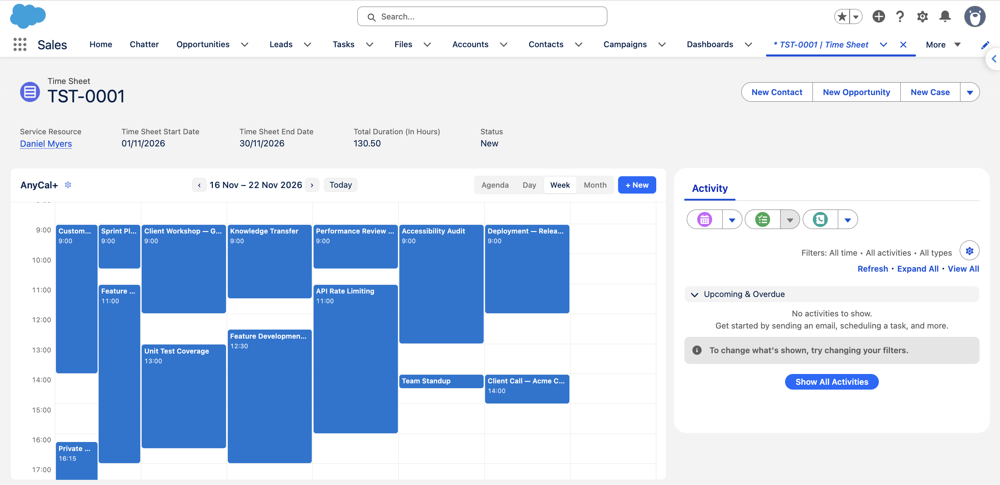

1Before you start
AnyCal+ is a Lightning Web Component that runs on Lightning record pages. It shows child records of the current record as calendar events, using date fields that already exist on those child objects.
- Lightning Experience with permission to edit record pages in Lightning App Builder.
- A parent object whose record page will host the calendar, for example Account, Time Sheet or a custom Project object.
- One or more child objects that look up to the parent and have at least one Date or Date/Time field, for example Time Sheet Entry with Start Time and End Time.
No external services are involved. The component reads and writes records through standard Salesforce APIs, and every query respects object and field-level security.
2Install the package
- Open the AnyCal+ listing on the AppExchange and choose Get It Now. We recommend installing in a sandbox first.
- Log in to the target org and choose who the package is installed for. Install for Admins Only is the safest default; you will grant access explicitly in the next step.
- Approve the installation. The package adds the
AnyCal+component, one small custom object (Configuration) that stores calendar settings, theAnyCal+ Adminpermission set and a set of translatable labels.
3Assign permissions
Two groups of people use AnyCal+ and they need different things.
Administrators who configure calendars
- Go to Setup, search for Permission Sets and open AnyCal+ Admin.
- Choose Manage Assignments, then Add Assignment, and pick the users who should be able to set up calendars.
Only users with this permission set see the gear icon and the Configure Calendar button on the component. Everyone else sees the finished calendar.
Everyone who views the calendar
End users need no AnyCal+ permission. They only need their normal access to the objects involved:
- Read on the child object and on the fields used for the title, start and end dates, so events appear.
- Create on the child object if they should be able to use the New button.
- Edit on the child object if they should be able to edit events from the calendar.
If a user lacks access, the related records or buttons are simply hidden for them. The calendar never bypasses sharing rules or field-level security.
4Add the component to a record page
- Open any record of the parent object, click the gear in the header and choose Edit Page.
- In the Components panel on the left, scroll to Custom (or search) and drag AnyCal+ onto the page. A full-width region or the main column works best.
- Optionally set Component Height in the properties panel, for example
600pxor80vh. Leave it blank to let the calendar size itself. - Save, then Activate the page if it is new (as the org default, or for specific apps and profiles).
Back on the record page, the component shows a Configure Calendar prompt to administrators until a configuration exists.
5Configure the calendar
Click Configure Calendar (or the gear icon in the component header) to open the configuration modal. Settings are saved per object: configure the calendar once on any Time Sheet record and it applies to every Time Sheet record page in the org.
General
| Setting | What it does |
|---|---|
| Component Title | The heading shown in the component. Defaults to AnyCal+. |
| Parent Start Date Field Parent End Date Field | Optional. Pick date fields on the parent record (for example Time Sheet Start Date and End Date) and the calendar opens on that period instead of today. |
| Default View | Month, Week, Day or Agenda. Users can still switch views at any time. |
| Week Starts On | Follow the user's locale, or force a fixed day. |
| Day View Start Hour Day View End Hour | The visible hour range in Day and Week views. Defaults to 7:00 to 19:00. Events outside the range are still shown; the grid simply scrolls. |
| Allow Add Records | Shows the New button and lets users click a date or time slot to create a record. |
| Allow Edit Records | Adds an Edit button to the event modal. |
Child objects
Click Add Child Object and choose a relationship from the list. AnyCal+ lists every object that looks up to the parent and that you have access to, along with the lookup field used. Add as many child objects as you need; each gets its own card.
| Setting | What it does |
|---|---|
| Relationship Field | The lookup on the child object that points to the parent. Pre-filled from the relationship you chose; change it only if the object has several lookups to the same parent. |
| Display Name Field | The field used as the event title, for example Subject or Name. |
| Start Date/Time Field | A Date or Date/Time field. Date fields produce all-day events. |
| End Date/Time Field | Optional. Leave blank for objects with a single date, or for records that should appear at a point in time. |
| Colour | Pick a default colour swatch for this object, or turn on Colour by Picklist, choose a picklist field and assign a colour per value (for example by Status or Type). |
| Filter Condition | Optional SOQL WHERE condition without the word WHERE, for example Status__c != 'Cancelled'. Only matching records appear. |
Click Save. The calendar loads immediately for you, and for every other user the next time they open a record of that object.
To change a configuration later, open the modal again from the same object, adjust the settings and save. Each save replaces the previous configuration for that object.
6Using the calendar

- Switch views with the Agenda, Day, Week and Month tabs; use the arrows or Today to move around.
- Click an event to see its fields. From there, Open Record goes to the full record page and Edit (if allowed) opens an inline edit form.
- Create records with the New button or by clicking an empty date or time slot. The new record is linked to the parent automatically and the dates are pre-filled from the slot. When more than one child object is configured, you are asked which type to create.
- Month view shows up to a few events per day and a +N more link when there are more; Agenda view lists everything in the period.
Dates, times and the first day of the week follow each user's Salesforce locale and time zone.
7Free edition limit
The Free edition supports one calendar configuration per org, which means one parent object. You can add as many child objects to that configuration as you like.
When a configuration already exists and an administrator opens the configuration modal on a different object, the modal shows which object is already configured and offers two options:
- Remove Existing Configuration to free the slot and configure this object instead.
- Upgrade to Pro for unlimited configurations. Contact us with your org ID (Setup, Company Information) and we will enable it on your org, no reinstall needed.
If an org ever holds more configurations than its limit allows (for example after a downgrade), every calendar shows a notice until an administrator removes the extra configurations.
8Troubleshooting
| What you see | What to do |
|---|---|
| No gear icon or Configure button | The user is not assigned the AnyCal+ Admin permission set. See Assign permissions. |
| Configuration Required | No calendar has been configured for this object yet. Open the modal and add a child object. |
| Field was not found | A field used in the configuration was renamed or deleted. Reopen the modal and pick the field again. |
| Expected Date or DateTime | The chosen start or end field is not a date type. Pick a different field. |
| Field does not look up to this record's object type | The relationship field points somewhere else. Choose the lookup that targets the parent object. |
| You don't have access | The current user lacks Read on the child object or one of its fields. Fix the profile or permission set; AnyCal+ never widens access on its own. |
| No events in this period | Usually a date range or filter question. Check the Filter Condition, try Agenda view, and confirm the records' dates fall inside the visible range. |
| Calendar is cut off or too tall | Set Component Height on the component in Lightning App Builder. |
Still stuck? Send us a message with the object names involved and, if possible, a screenshot of the error. Include your org ID so we can look up your edition.